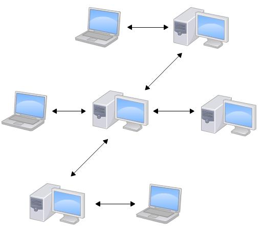
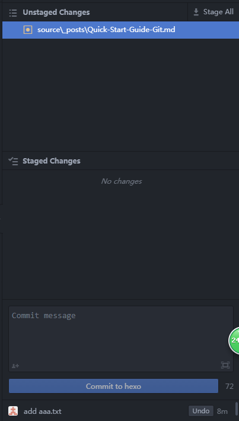
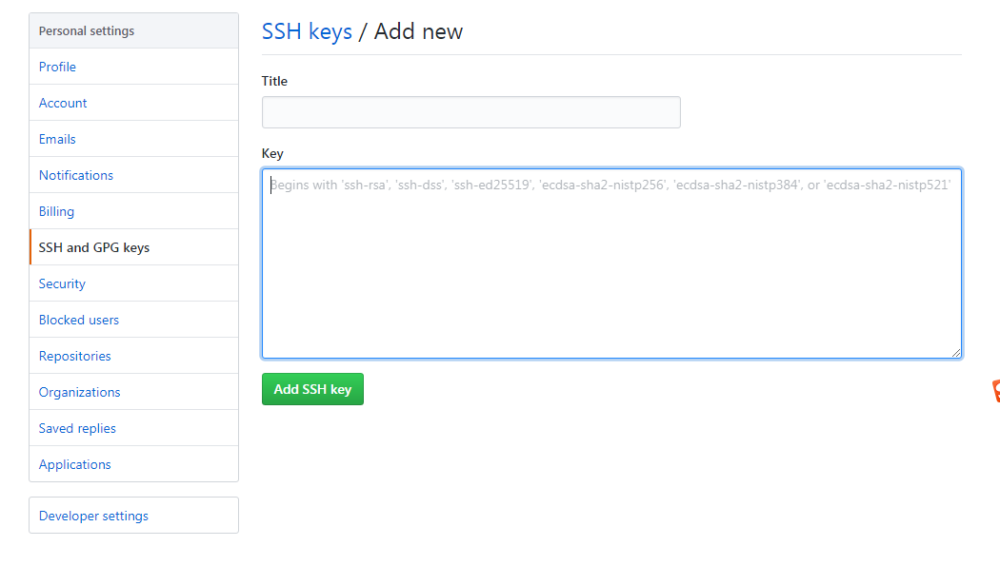

Quick Start Guide Git
Git介绍
Git是目前世界上最先进的分布式版本控制系统（没有之一）。
集中式vs分布式区别
- 集中式网络拓扑图

- 分布式拓扑图

Git 安装
linux上安装
1 | sudo apt-get install git |
windows上安装
在Windows上使用Git，可以从官网直接下载安装程序，（网速慢的同学请从国内镜像）下载，然后按默认选项安装即可。
安装完成后，在开始菜单里找到“Git”->“Git Bash”，蹦出一个类似命令行窗口的东西，就说明Git安装成功！
安装完成后，还需要最后一步设置，在命令行输入：
1 | git config --global user.name "Your Name" |
因为Git是分布式版本控制系统，所以，每个机器都必须自报家门：你的名字和Email地址。你也许会担心，如果有人故意冒充别人怎么办？这个不必担心，首先我们相信大家都是善良无知的群众，其次，真的有冒充的也是有办法可查的。
注意git config命令的–global参数，用了这个参数，表示你这台机器上所有的Git仓库都会使用这个配置，当然也可以对某个仓库指定不同的用户名和Email地址。
创建版本库
首先，选择一个合适的地方，创建一个空目录：
1 | mkdir learngit |
第二步，通过git init命令把这个目录变成Git可以管理的仓库：
1 | git init |
把文件添加到版本库
现在我们编写一个readme.txt文件，内容如下
1 | Git is a version control system. |
第一步，用命令git add告诉Git，把文件添加到仓库：
1 | git add readme.txt |
第二步，用命令git commit告诉Git，把文件提交到仓库：
1 | git commit -m "wrote a readme file" |
版本管理
我们已经成功地添加并提交了一个readme.txt文件，现在，是时候继续工作了，于是，我们继续修改readme.txt文件，改成如下内容：
1 | Git is a "distributed" version control system. |
现在，运行git status命令看看结果：
1 | git status |
想查看具体改动哪些内容，需要用git diff这个命令看看
1 | git diff readme.txt |
添加提交修改的文件
1 | git add readme.txt |
版本回退
再次修改readme.txt文件如下：
1 | Git is a distributed version control system. |
然后尝试提交：
1 | git add readme.txt |
现在，我们回顾一下readme.txt文件一共有几个版本被提交到Git仓库里了：
版本1：wrote a readme file
1 | Git is a version control system. |
版本2：add distributed
1 | Git is a distributed version control system. |
版本3：append GPL
1 | Git is a distributed version control system. |
在实际工作中,我们用git log –pretty=oneline命令查看每次提交的改动–pretty=oneline精简格式（可选）
1 | git log --pretty=oneline |
现在如果准备把readme.txt回退到上一个版本，也就是add distributed的那个版本，怎么做呢？
先看下git回退的原理，Git的版本回退速度非常快，因为Git在内部有个指向当前版本的HEAD指针，当你回退版本的时候，Git仅仅是把HEAD从指向append GPL,改为指向add distributed：


我们可以通过git reset –hard命令实现版本回退
1 | git reset --hard HEAD^ |
HEAD表示当前版本，上一个版本就是HEAD^，上上一个版本就是HEAD^^ ，上100个版本HEAD~100，当然也可以直接通过commit id来回退到对应的版本
1 | git reset --hard 1094a |
只要有commit id 指针可以切换到任意版本，无论是回退还是恢复，有时由于回退到上一个版本后无法得之回退前的commit id，想要还原回来我们需要通过git reflog命令查找回退前的commit id
1 | git reflog |
如果还没有建议登陆到git服务器（在本地修改还没push的前提下）查看对应版本的commit id
工作区和暂存区
工作区：就是你在电脑里能看到的目录，比如我的learngit文件夹就是一个工作区(隐藏目录.git不属于工作区)
版本库：工作区有一个隐藏目录.git，这个就是Git的版本库。版本库包括 stage(暂存区)、master(分支)、head(指向master的指针)
暂存区：版本库中的stage(或者叫index)部分。
三者关系如图所示：

第一步是用git add把工作区的文件修(创建新文件也属于文件修改)改添加到stage中进去，实际上就是把件修改添加到暂存区；
第二步是用git commit提交更改，实际上就是把暂存区的所有内容提交到当前分支。
管理修改
Git管理的是修改，当你用git add命令后，在工作区的第一次修改被放入暂存区，准备提交，但是，在工作区的第二次修改并没有放入暂存区，所以，git commit只负责把暂存区的修改提交了，也就是第一次的修改被提交了，第二次的修改不会被提交。
那怎么提交第二次修改呢？你可以继续git add再git commit，也可以别着急提交第一次修改，先git add第二次修改，再git commit，就相当于把两次修改合并后一块提交了：
第一次修改 -> git add -> 第二次修改 -> git add -> git commit
总结：每次修改，如果不用git add到暂存区，那就不会加入到commit中。
撤销修改
让我们看看撤销修改应用的几个场景：
场景1：当你改乱了工作区某个文件的内容，想直接丢弃工作区的修改时，用命令git checkout – file。
场景2：当你不但改乱了工作区某个文件的内容，还添加到了暂存区时，想丢弃修改，分两步，第一步用命令git reset HEAD
场景3：已经提交了不合适的修改到版本库时，想要撤销本次提交，参考版本回退一节，不过前提是没有推送到远程库。

看图理解：
场景1: 相当于工作区(unstage changes)撤销修改
场景2: 相当于staged changes 撤销到unstage changes 然后在执行场景1，
场景3：有两种情况，
1.完全撤销Git reset –hard “commit-id” 工作区的改动全部撤销。有的改动不想撤销时这个命令是致命的。
2.安全撤销git reset –soft HEAD^相当于图中的undo只撤回当时提交，而不影响现在工作区的改动
删除文件
删除文件有两种情况：
一是确实要从版本库中删除该文件，那就用命令git rm删掉，并且git commit：
1 | git rm test.txt |
另一种情况是删错了，因为版本库里还有呢，所以可以很轻松地把误删的文件恢复到最新版本：
1 | git checkout -- test.txt |
远程仓库
请自行注册GitHub账号。由于你的本地Git仓库和GitHub仓库之间的传输是通过SSH加密的，所以，需要一点设置：
第1步：创建SSH Key。在用户主目录下，看看有没有.ssh目录，如果有，再看看这个目录下有没有id_rsa和id_rsa.pub这两个文件，如果已经有了，可直接跳到下一步。如果没有，打开Shell（Windows下打开Git Bash），创建SSH Key：
1 | ssh-keygen -t rsa -C "youremail@example.com" |
你需要把邮件地址换成你自己的邮件地址，然后一路回车，使用默认值即可，由于这个Key也不是用于军事目的，所以也无需设置密码。
如果一切顺利的话，可以在用户主目录里找到.ssh目录，里面有id_rsa和id_rsa.pub两个文件，这两个就是SSH Key的秘钥对，id_rsa是私钥，不能泄露出去，id_rsa.pub是公钥，可以放心地告诉任何人。
第2步：登陆GitHub，打开“Account settings”，“SSH Keys”页面：
然后，点“Add SSH Key”，填上任意Title，在Key文本框里粘贴id_rsa.pub文件的内容：

添加远程库
首先，登陆GitHub，然后，在右上角找到“Create a new repo”按钮，创建一个新的仓库 learngit：
目前，在GitHub上的这个learngit仓库还是空的，GitHub告诉我们，可以从这个仓库克隆出新的仓库，也可以把一个已有的本地仓库与之关联，然后，把本地仓库的内容推送到GitHub仓库。
由于我们在本地初始化的版本库所以我们用第二种方式关联远程库：
1 | git remote add origin git@github.com:whiteleibniz/learngit.git |
下一步，就可以把本地库的所有内容推送到远程库上：1
2
3
4
5
6
7
8
9
10 git push -u origin master
Counting objects: 20, done.
Delta compression using up to 4 threads.
Compressing objects: 100% (15/15), done.
Writing objects: 100% (20/20), 1.64 KiB | 560.00 KiB/s, done.
Total 20 (delta 5), reused 0 (delta 0)
remote: Resolving deltas: 100% (5/5), done.
To github.com:whiteleibniz/learngit.git
* [new branch] master -> master
Branch 'master' set up to track remote branch 'master' from 'origin'.
由于远程库是空的，我们第一次推送master分支时，加上了-u参数，Git不但会把本地的master分支内容推送的远程新的master分支，还会把本地的master分支和远程的master分支关联起来，在以后的推送或者拉取时就可以简化命令。
从远程库克隆
上次我们讲了先有本地库，后有远程库的时候，如何关联远程库。
现在，假设我们从零开发，那么最好的方式是先创建远程库，然后，从远程库克隆。
首先，登陆GitHub，创建一个新的仓库，名字叫gitskills：
远程库已经准备好了，下一步是用命令git clone克隆一个本地库：1
2
3
4
5 git clone git@github.com:whiteleibniz/gitskills.git
Cloning into 'gitskills'...
remote: Counting objects: 3, done.
remote: Total 3 (delta 0), reused 0 (delta 0), pack-reused 3
Receiving objects: 100% (3/3), done.